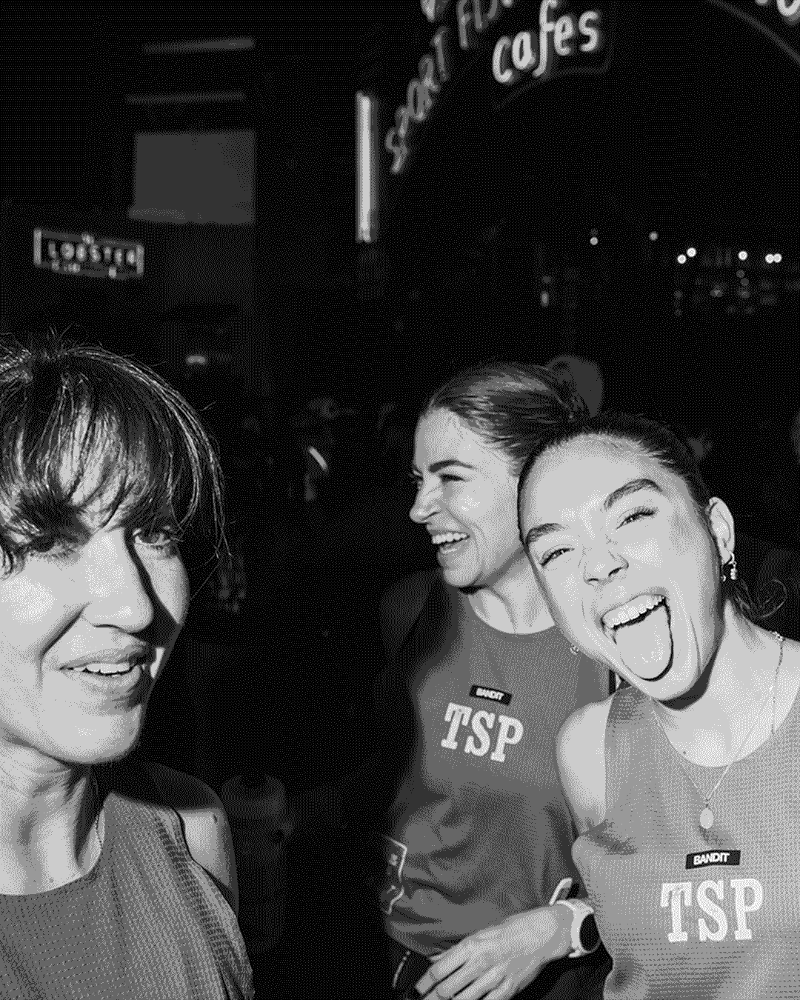
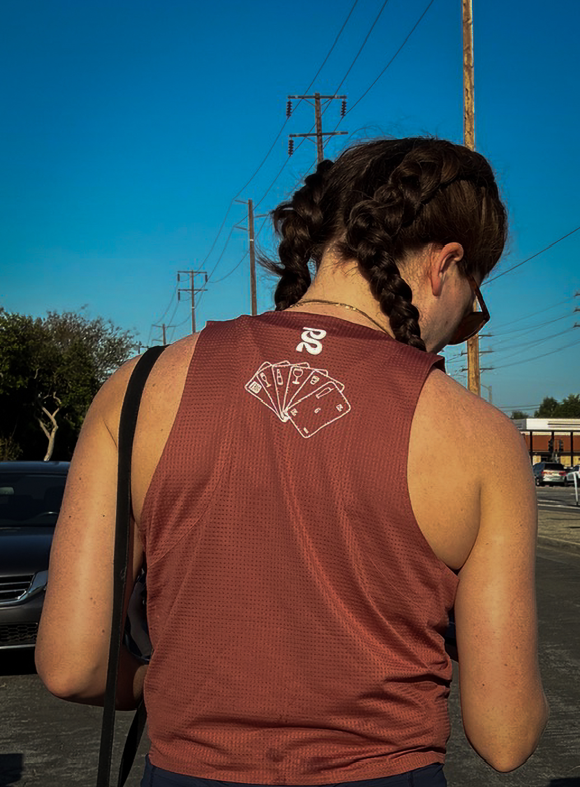
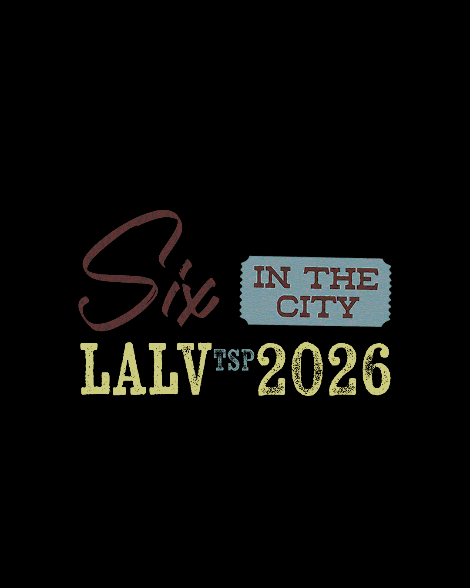
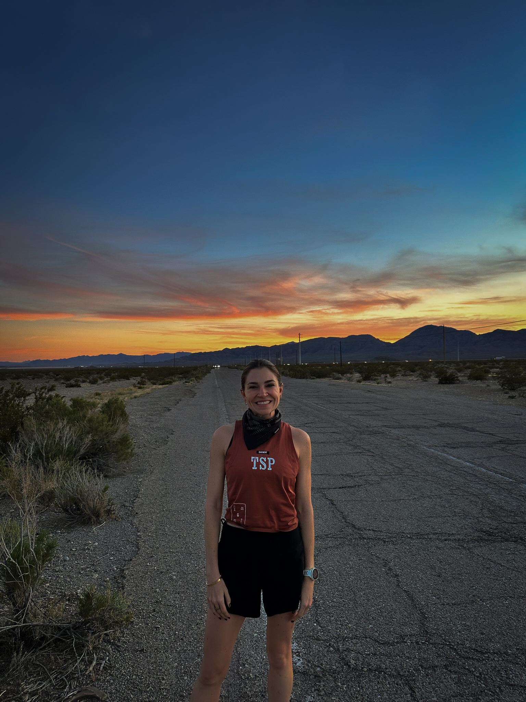
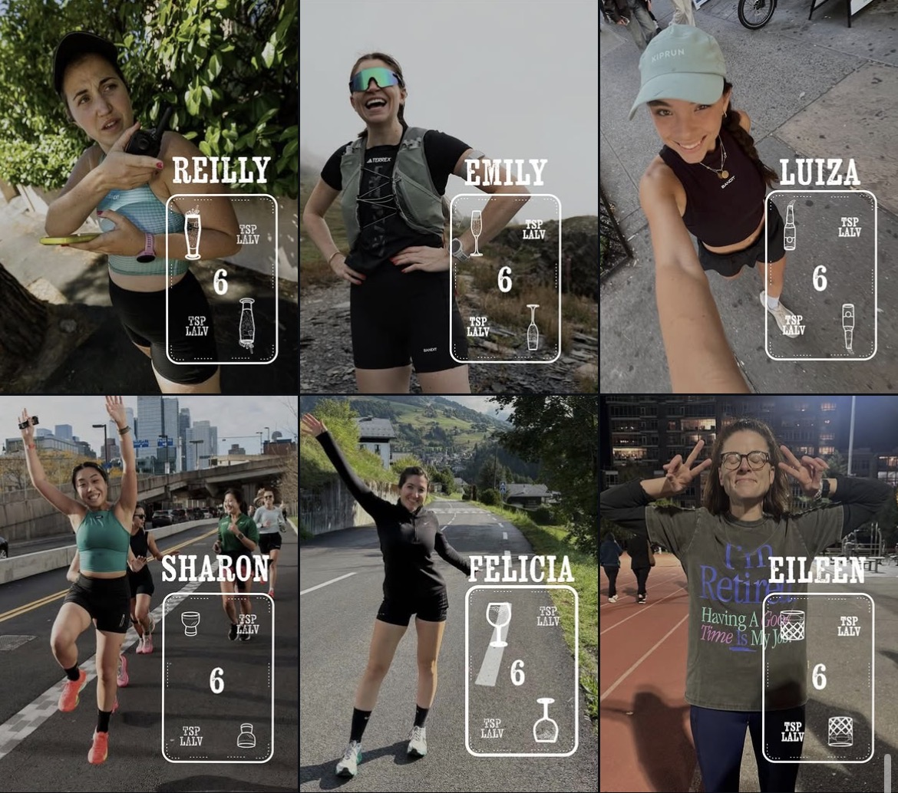
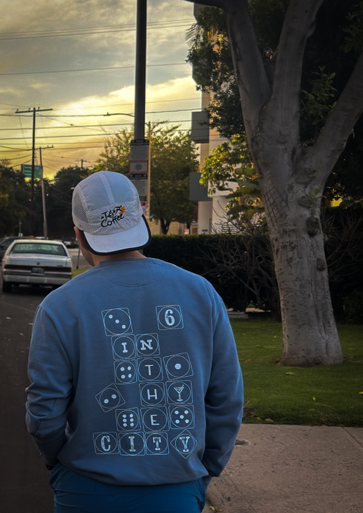
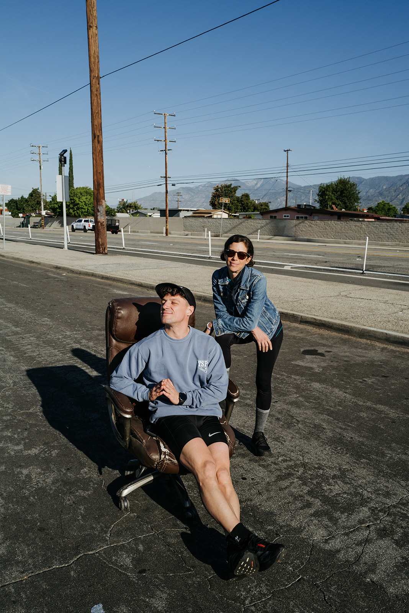
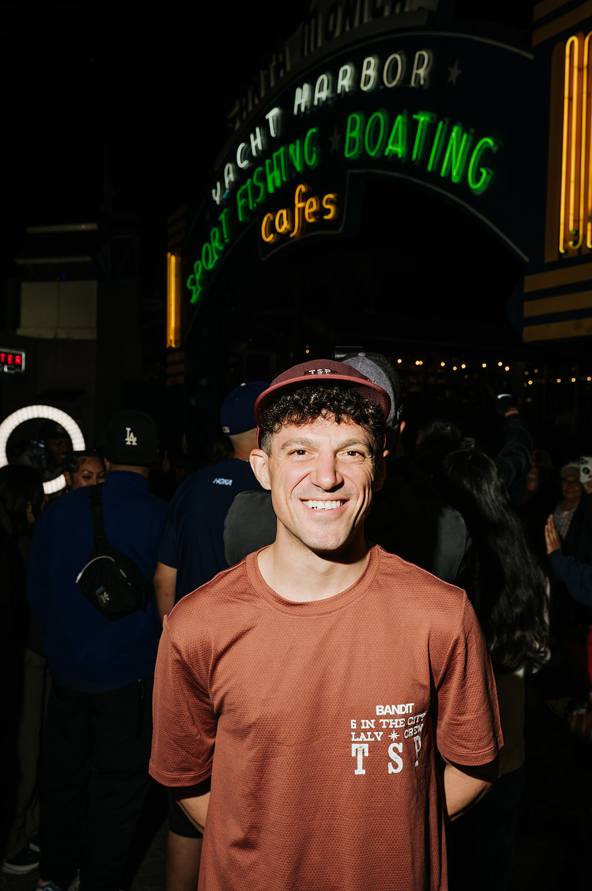
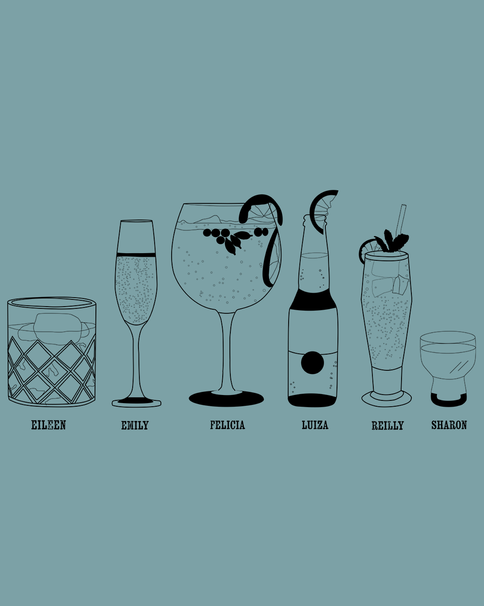

Six in The City
Visual Identity
The Speed Project is an unsanctioned relay ultramarathon that begins at the Santa Monica Pier in California and ends at the Welcome to Las Vegas sign, covering over 300 miles. With no fixed route, teams must plan their own way through the Mojave Desert, making strategy, trust, and adaptability just as important as performance. Teams are typically made up of six runners, either in the original mixed format or as part of the all-women “Six in the City” challenge.
This project follows six women based in New York City who, alongside their crew, take on this journey across the desert. More than a race, it becomes a shared experience shaped by exhaustion, adrenaline, and connection. The identity explores a balance between femininity, the rawness of the desert, and the chaotic energy of Las Vegas, while still feeling personal and intentional.
The logo draws from poker cards, referencing Las Vegas and the idea of chance. Each runner becomes her own card, with an individual symbol—a personal “flame”—that reflects her role within the team. Together, these elements form a system that highlights both individuality and unity. The “drink of choice” for each runner nods to Sex and the City, reinforcing themes of friendship and shared moments.
The color palette is grounded in desert tones, contrasted with vibrant accents inspired by Vegas lights. The typography reflects the rhythm of the multi-day run—slightly chaotic, but still controlled and expressive.
In the end, it’s about moving together—six individuals showing up as one team, from start to finish.









